漢字の成り立ち The origin of Kanji
漢字の歴史クイズ
突然ですが、みなさんに漢字の歴史クイズを2問出します。
- 漢字はいつ、どこで作られたでしょうか
- 漢字はどうやって作られたでしょうか
答えられましたか。1つ目の答えは、昔の中国です。昔の日本人は中国から漢字を持ち帰り、日本でも使うようになりました。では2つ目の答えです。これは、一つではなく四つあります。これから、その四つの正解を見てみましょう。
一つ目の正解「象形（しょうけい）」
象形文字は、ものの形を線でえがいた絵をもとに作られた漢字です。「木」、「火」、「山」などの漢字の成り立ちを見てみましょう。
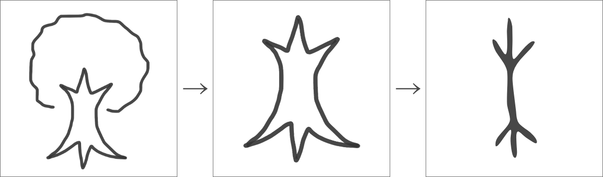
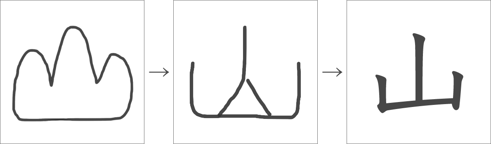
二つ目の正解「指事（しじ）」
指事文字は、一つ目の象形文字とは反対で、目に見えないものを表す絵をもとに作られた漢字です。目に見えないものが元になっているので、象形文字よりは数が少ないです。「上」、「下」、「中」などがあります。
 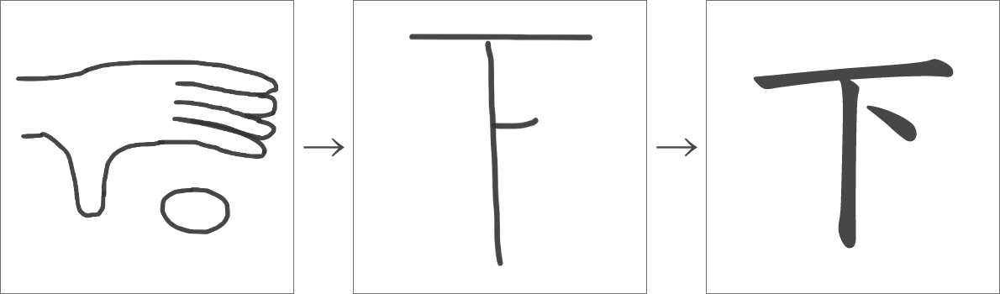
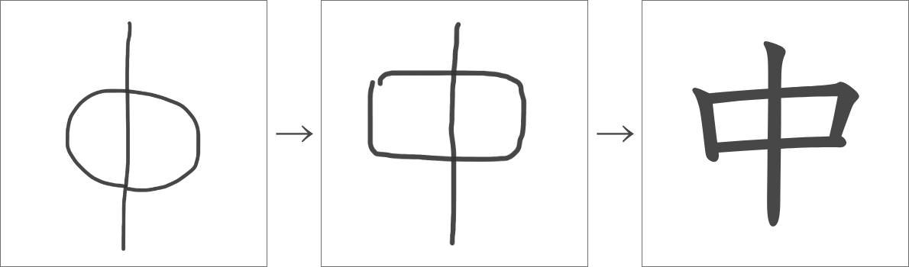
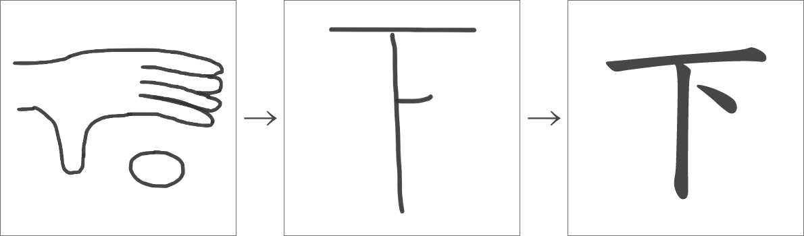
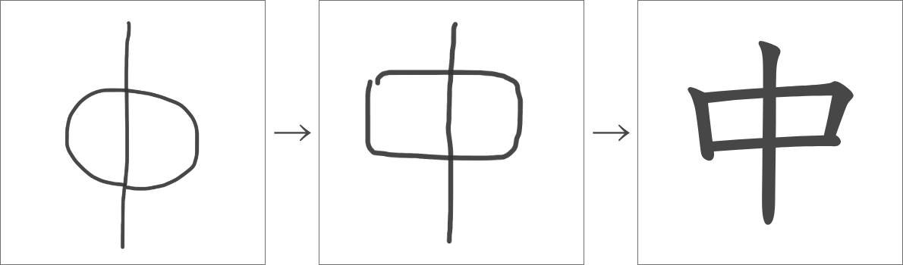
三つ目の正解「会意（かいい）」
会意文字は、何個かの漢字を組み合わせて別の意味を表す漢字のことです。木がたくさんある「森」、人が木の横で「休」む、のように作られます。
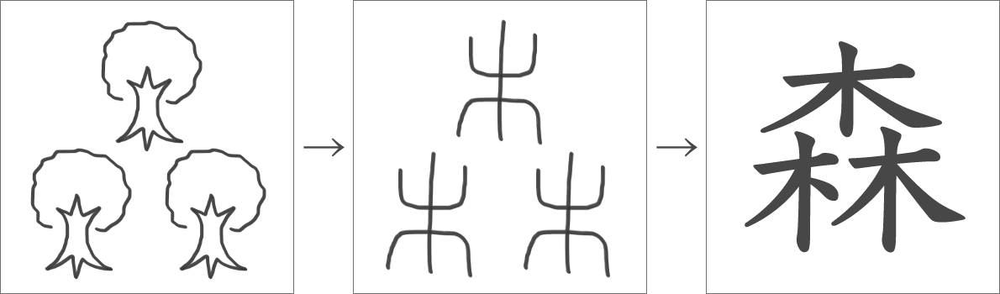
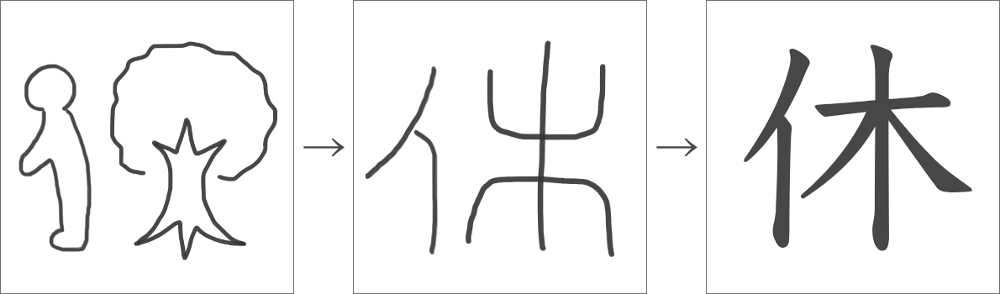
四つ目の正解「形声（けいせい）」
形声文字は、音を表す漢字と意味を表す漢字を組み合わせて作られた漢字です。「草」、「晴」、「味」などの漢字の成り立ちを見てみましょう。
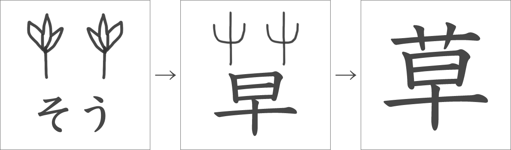
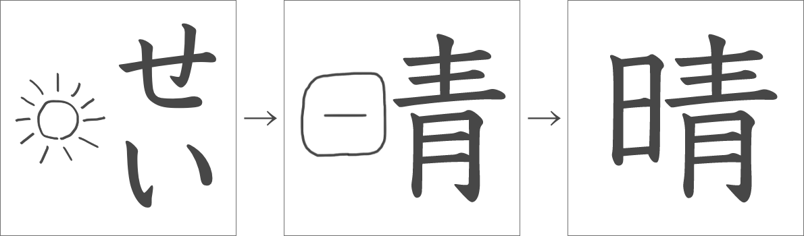
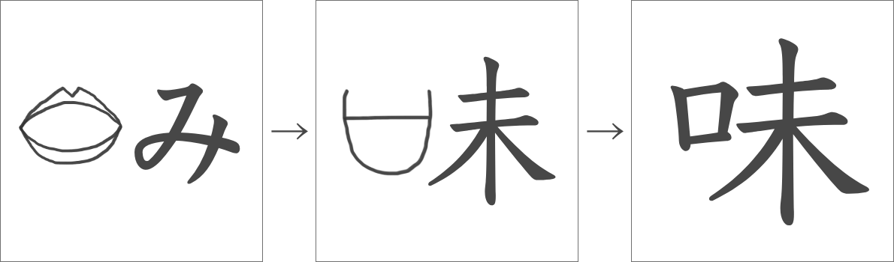
いろんな漢字の成り立ちがありましたね。みなさんが今覚えようとしている漢字は「象形文字」、「指事文字」、「会意文字」、「形声文字」のどれでしょうか。ぜひ調べてみてください。